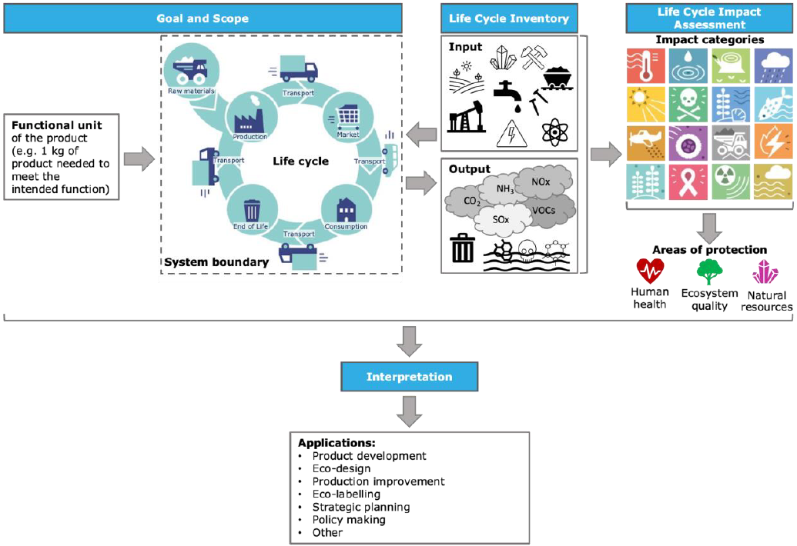

Environmental assessment
Introduction to LCA
Life Cycle Assessment (LCA or E-LCA) is a tool to evaluate the environmental performance of products (goods, processes and services). The methodology of Life Cycle Assessment is formalised by the International Standards Organisation (ISO). According to ISO 14040-44, LCA is defined as “compilation and evaluation of the inputs, outputs and the potential environmental impacts of a product system throughout its life cycle”. LCA can be used in the context of decision-making to support product development, policy-making, strategic planning and so on as it facilitates the comparison between different processes studied according to the same parameters with the same methodology. LCA aims to evaluate the sustainability of a process, a product or a service along its life cycle steps.
The full assessment covers the entire life cycle of the studied product, process or activity from raw material extraction through materials processing, manufacturing, distribution, use, maintenance, and disposal or recycling. The environmental impacts of all the inputs and outputs flows occurring during these stages are evaluated.
LCA provides a set of environmental indicators representative of the consequences of an activity on several aspects of the environment (climate change, resource use, air and water quality, human health, etc.). The interpretation of LCA study all along life cycle stages enables the identification of major contributions to the environmental burdens and avoids potential issues of impacts shifting.
The standardised LCA framework encompasses four steps:
Goal and Scope definition: First, the objectives and intended applications of the LCA study are explained. The system under study is defined, including its boundaries (conceptual, geographical and temporal), the life cycle stages considered, the quality of data and the main hypothesis applied. This step also include the description of the functional unit, a reference representation of the service provided by the system studied, for which the environmental impacts will be assessed or compared.
Life Cycle Inventory (LCI) analysis: This phase is a technical process of data collection, in order to quantify the inputs of energy and raw material, and outputs of products, co-products, waste and emissions related to the system, as defined in the scope of the study.
Life Cycle Impact Assessment (LCIA): Potential environmental impacts are calculated from the inventory using a selected assessment method to characterize the impacts of each elementary flow. Dedicated software (SimaPro, GaBi, etc.) and databases (Ecoinvent) can be used for this purpose. The choice of impacts assessment method is adapted according to the goal and scope of the study. The Environmental Footprint (EF 3.0) method proposed be the European Commission (https://eplca.jrc.ec.europa.eu/) is currently one more widely used solution.
Interpretation: Results are presented and analysed to highlight the main sources of environmental impacts and potential comparison with reference system. Consistency of the results is evaluated through sensitivity analysis of modelling choices. LCA is an iterative process and the conclusions can lead to a revision of the aforementioned steps, for instance to evaluate a modification of the reference system, correct a modelling assumption or compensate low-quality or missing data.
{kind=link}

Fig. 26 Generic workflow and applications of an LCA
[European Commission, 2021, “Understanding Product Environmental Footprint and Organisation Environmental Footprint methods”, https://op.europa.eu/en/publication-detail/-/publication/c43b9684-4521-11ed-92ed-01aa75ed71a1/language-en ]
What are the impact categories considered in the EF method?
Parameters |
Definition |
|
|---|---|---|
1 |
Climate change (CC) |
This indicator refers to the increase in the average global temperatures as result of greenhouse gas (GHG) emissions. The greatest contributor is generally the combustion of fossil fuels such as coal, oil, and natural gas. The global warming potential of all GHG emissions is measured in kilogram of carbon dioxide equivalent (kg CO2 eq), namely all GHG are compared to the amount of the global warming potential of 1 kg of CO2. |
2 |
Ozone depletion (ODP) |
The stratospheric ozone (O3) layer protects us from hazardous ultraviolet radiation (UV-B). Its depletion increases skin cancer cases in humans and damage to plants. The potential impacts of all relevant substances for ozone depletion are converted to their equivalent of kilograms of trichlorofluoromethane (also called Freon-11 and R-11), hence the unit of measurement is in kilogram of CFC-11 equivalent (kg CFC-11 eq). |
3 |
Human toxicity, cancer effects (HTOX_c) |
This indicator refers to potential impacts, via the environment, on human health caused by absorbing substances from the air, water and soil. Direct effects of products on human health are currently not measured. The unit of measurement is Comparative Toxic Unit for humans (CTUh). This is based on a model called USEtox. |
4 |
Human toxicity, non-cancer effects (HTOX_nc) |
This indicator refers to potential impacts, via the environment, on human health caused by absorbing substances from the air, water, and soil. Direct effects of products on human health are currently not measured. The unit of measurement is Comparative Toxic Unit for humans (CTUh). This is based on a model called USEtox. |
5 |
Particulate matter (PM) |
This indicator measures the adverse impacts on human health caused by emissions of Particulate Matter (PM) and its precursors (e.g. NOx, SO2). Usually, the smaller the particles, the more dangerous they are, as they can go deeper into the lungs. The potential impact of is measured as the change in mortality due to PM emissions, expressed as disease incidence per kg of PM2.5 emitted. |
6 |
Ionising radiation (IR) |
The exposure to ionising radiation (radioactivity) can have impacts on human health. The Environmental Footprint only considers emissions under normal operating conditions (no accidents in nuclear plants are considered). The potential impact on human health of different ionising radiations is converted to the equivalent of kilobequerels of Uranium 235 (kg U235 eq). |
7 |
Photochemical ozone formation (POF) |
Ozone (O3) on the ground (in the troposphere) is harmful. it attacks organic compounds in animals and plants, it increases the frequency of respiratory problems when photochemical smog (summer smog) is present in cities. The potential impact of substances contributing to photochemical ozone formation is converted into the equivalent of kilograms of NonMethane Volatile Organic Compounds (e.g. alcohols, aromatics, etc. kg NMVOC eq). |
8 |
Acidification (AC) |
Acidification has contributed to a decline of coniferous forests and an increase in fish mortality. Acidification can be caused by emissions to the air and deposition of emissions in water and soil. The most significant sources are combustion processes in electricity, heat production, and transport. The more sulphur the fuels contain the greater their contribution to acidification. The potential impact of substances contributing to acidification is converted to the equivalent of moles of hydron (general name for a cationic form of atomic hydrogen, mol H+ eq). |
9 |
Eutrophication, terrestrial (TEU) |
Eutrophication arises when substances containing nitrogen (N) or phosphorus (P) are released to ecosystems. These nutrients cause a growth of algae or specific plants and thus limit growth in the original ecosystem. The potential impact of substances contributing to terrestrial eutrophication is converted to the equivalent of moles of nitrogen (mol N eq). |
10 |
Eutrophication, freshwater (FEU) |
Eutrophication in ecosystems happens when substances containing nitrogen (N) or phosphorus (P) are released to the ecosystem. As a rule, the availability of one of these nutrients will be a limiting factor for growth in the ecosystem, and if this nutrient is added, the growth of algae or specific plants will increase. If algae grow too rapidly, it can leave water without enough oxygen for fish to survive. Nitrogen emissions into the aquatic environment are caused by fertilisers used in agriculture, but also by combustion processes. The most significant sources of phosphorus emissions are sewage treatment plants for urban and industrial effluents and leaching from agricultural land. The potential impact of substances contributing to freshwater eutrophication is converted to the equivalent of kilograms of phosphorus (kg P eq). |
11 |
Eutrophication, marine (MEU) |
Eutrophication in ecosystems happens when substances containing nitrogen (N) or phosphorus (P) are released to the ecosystem. As a rule, the availability of one of these nutrients will be a limiting factor for growth in the ecosystem, and if this nutrient is added, the growth of algae or specific plants will increase. If algae grow too rapidly, it can leave water without enough oxygen for fish to survive. For the marine environment this will be mainly due to an increase of nitrogen (N). Nitrogen emissions are caused largely by the agricultural use of fertilisers, but also by combustion processes. The potential impact of substances contributing to marine eutrophication is converted to the equivalent of kilograms of nitrogen (kg N eq). |
12 |
Ecotoxicity, freshwater (ECOTOX) |
This indicator refers to potential toxic impacts on an ecosystem, which may damage individual species as well as the functioning of the ecosystem. Some substances tend to accumulate in living organisms. The unit of measurement is Comparative Toxic Unit for ecosystems (CTUe). This is based on a model called USEtox. |
13 |
Land use (LU) |
Use and transformation of land for agriculture, roads, housing, mining or other purposes. The impacts can vary and include loss of species, of the organic matter content of soil, or loss of the soil itself (erosion). This is a composite indicator measuring impacts on four soil properties (biotic production, erosion resistance, groundwater regeneration and mechanical filtration), expressed in points (Pts). |
14 |
Water use (WU) |
The abstraction of water from lakes, rivers or groundwater can contribute to the depletion of available water. The impact category considers the availability or scarcity of water in the regions where the activity takes place, if this information is known. The potential impact is expressed in cubic metres (m3) of water use related to the local scarcity of water. |
15 |
Resource use, fossils (FRD) |
The earth contains a finite amount of non-renewable resources, such as fossil fuels like coal, oil and gas. The basic idea behind this impact category is that extracting resources today will force future generations to extract less or different resources. For example, the depletion of fossil fuels may lead to the non-availability of fossil fuels for future generations. The amount of materials contributing to resource use, fossils, are converted into MJ. |
16 |
Resource use, minerals and metals (MRD) |
This impact category has the same underlying basic idea as the impact category resource use, fossils (namely, extracting a high concentration of resources today will force future generations to extract lower concentration or lower value resources). The amount of materials contributing to resource depletion are converted into equivalents of kilograms of antimony (kg Sb eq). |